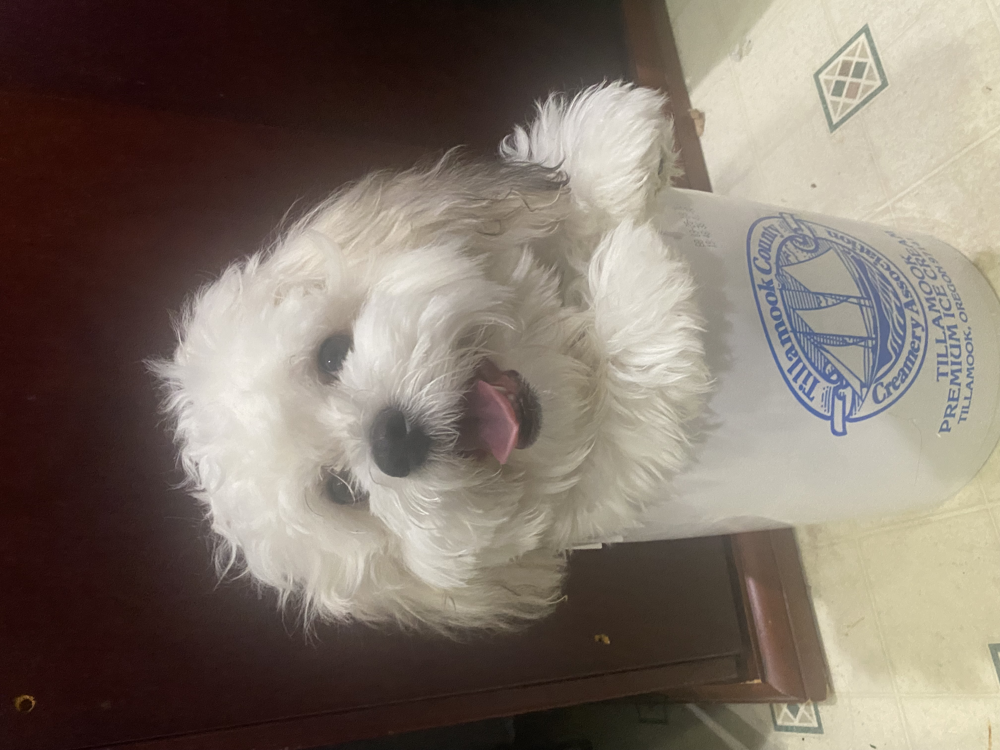
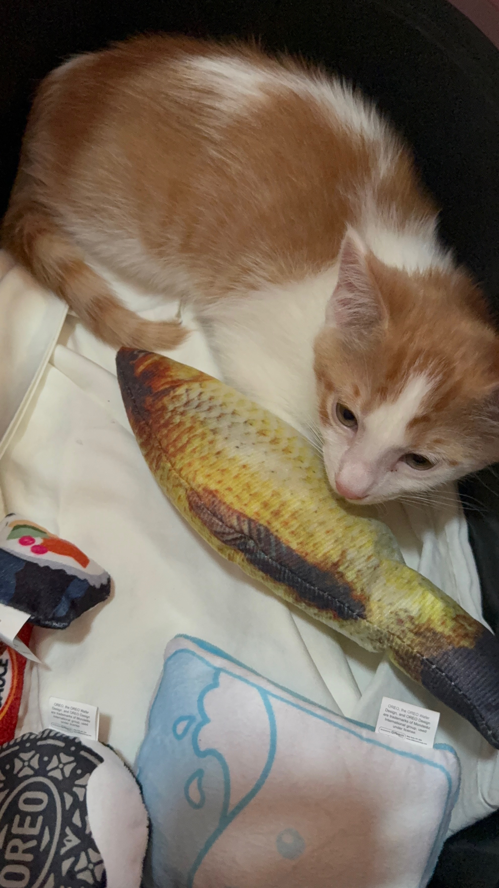
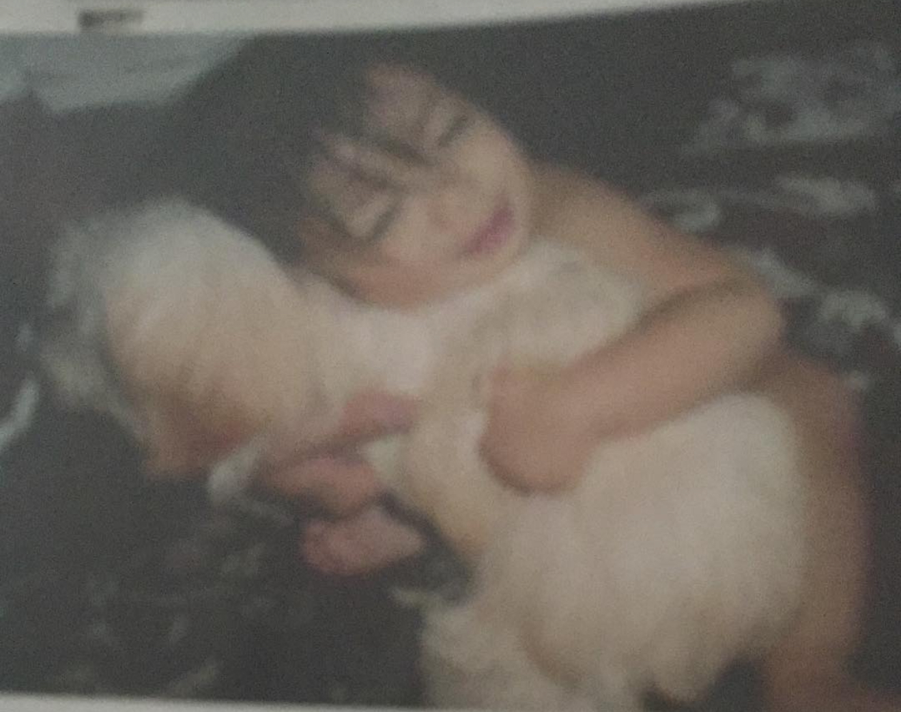

Hey everyone, my name is Christan Allagones and this webpage is about getting to know me and my interests. I am 20 years old, I graduated from Central Kitsap High School in 2023. I am attending Olympic College getting a second associates in cybersecurity. I already have a general associates from OC. I was born in Bremerton and have lived in the Kitsap area my entire life.
My hobbies and interests include:
- Basketball
- Football
- Volleyball
- Gaming
- My addiction right now: Fantasy Football
My Pets
-



I've had pets for almost my entire life, from before I was born to 2018 with, Cutie, the dog on the right, and the past few years with, Tobi, the dog on the left, and most recently, Milo, the cat in the middle. Cutie was a female Shih Tzu Poodle mix, Tobi a male teddy bear breed(Shih Tzu Bichon Frise), and Milo a male orange tabby. I always wanted to have a companion through life, so I am grateful to have three already. I didn't always like cats, but since getting Milo, he has grown on me, making me like them.